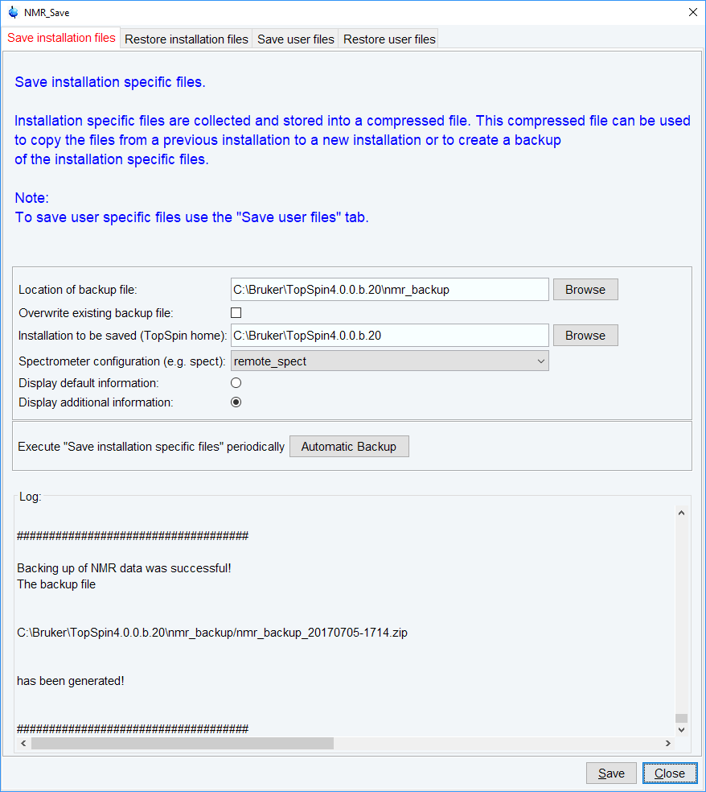
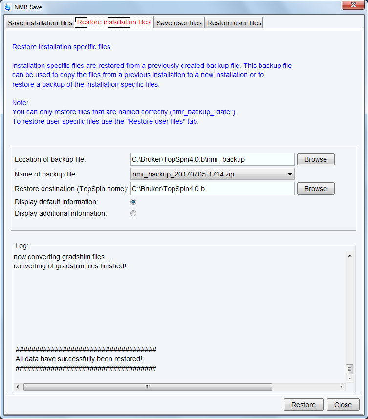
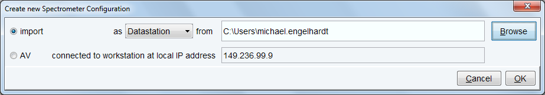
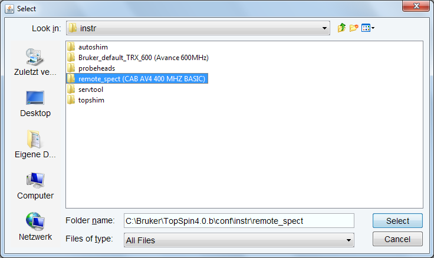
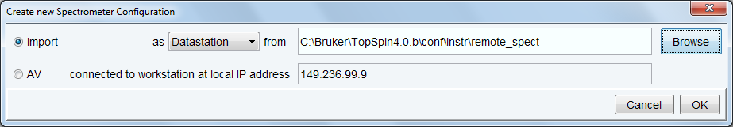
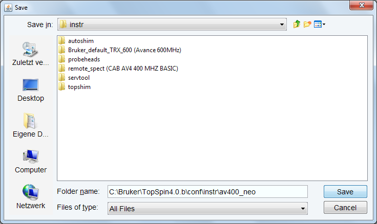
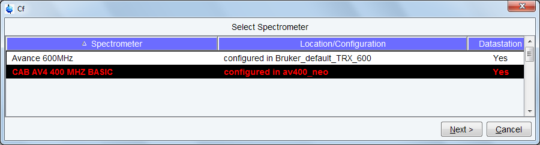
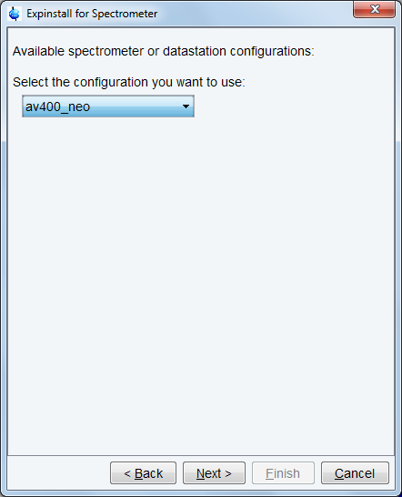

Configuration of a Processing-Only Workstation Using an Existing Spectrometer Configuration
If the Workstation does not control a spectrometer but is used in connection with a particular spectrometer, e.g. for setting up experiments, processing or plotting you should configure it like that spectrometer.
To transfer the configuration of the spectrometer to the processing-only Workstation execute the following steps:
- Save the desired configuration on your spectrometer Workstation with nmr_save (see Backup and restore of important files with nmr_save)

- Copy this archive file to the processing-only Workstation.
- Restore the configuration with the nmr_restore command to the processing-only Workstation (see Backup and restore of important files with nmr_save)

- The spectrometer configuration is now available. It will appear in the expinstall window and can be used to configure the Processing-only system.
- Click cf in the Configuration check window or type cf in the command line of the TopSpin main window. Enter the NMR administration password when prompted for it. In the cf window, click New Spectrometer. Enter the pathname to the above imported spectrometer configuration or click Browse to select it.

Here the configuration stored as remote_spect has been selected:

- Click Select, the name will be entered in the “from” field:

- Click OK and enter a suitable name for the spectrometer configuration to describe it in a meaningful way, e.g. av400_neo:

- Click Save.

The cf window will be displayed. Click Cancel and continue with edprobe and expinstall.

In the expinstall window, the available spectrometer list should show the av400_neo entry. Select it and continue as outlined in the previous chapter.